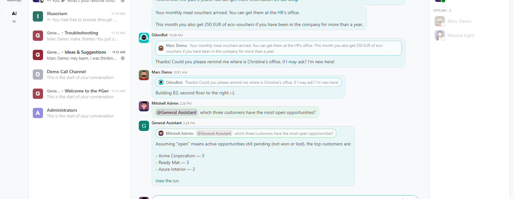
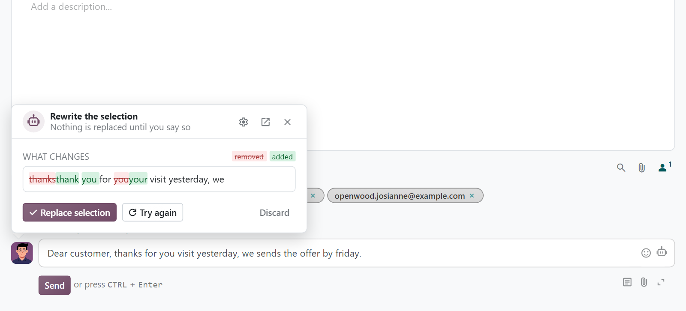
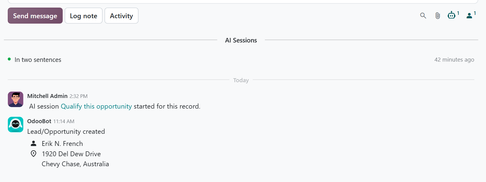

Mention an agent of MuK AI Assistant in a Discuss channel or a direct chat, and its answer lands in that conversation. In the chatter of any record, a writing helper fixes, rewrites or drafts your message from the thread.
Type an at sign and the agent's name. Its answer replaces a short note in the conversation, never a mail.
The writing helper shows what it changes as a diff. Nothing reaches your message until you accept it.
Chats started for a record show up in its chatter, live while they work, one click from the conversation.

No new screen to learn: the agents join the conversations and composers your team already uses, with the rights of the person who asks.
Agents are offered with the at sign in channels and direct chats, without ever joining them or being mailed.
A mentioned agent never stops to ask or wait for approval. It answers for the likeliest reading and says which one it took.
Fix grammar, shorten, change the tone, translate, or write a reply, a follow-up or a summary from the record.
The buttons are skills an administrator can reword. An instruction that worked is saved as a button with one click.
Take a draft into the AI chat to discuss it, and put the answer back into your message from there.
Messages reach the agent fenced as data, never as instructions, and a run reads only what its user may read.

With text selected it fixes, rewrites or translates that part; with a draft it reworks the message; on an empty composer it writes from the record, with a length and a tone.
It reads the conversation on the record and keeps its language. The same helper sits in the full composer, in its toolbar and behind a button in its footer.
A chat started for a record, by an automation for example, leaves a note on it and appears under the AI Sessions button of its chatter. A coloured dot tells whether it is working, done or failed.
The linked record is part of what the agent knows, and a skill made for a record runs on it even without a screen.
Linking a chat to a record shares nothing: the transcript stays with the user who ran it, and only an administrator sees every run of the record.

What you get for free, and what has to be paid work.
Issues and merge requests are welcome on the public repository. They are read — but no response time is promised.
Quick actions written for your team's tone and languages, or a fix on a deadline, is paid work — quoted up front. Write to sale@mukit.at.
LGPL-3. Use it, change it, ship it inside your own work — no licence key, no database count.
Modules written for your process, on your Odoo version.
Odoo joined up with the systems you already run.
Hosting, deployment and upgrades you do not have to watch.
Your team taught the parts of Odoo they actually use.
An agreement, so an answer does not depend on who is free.
Odoo.sh or on-premise, Community or Enterprise, with MuK AI Assistant and MuK AI Skills and a provider set up.
Answer Mentions on each agent's form; the quick actions under MuK AI › Skills, as skills of the type Composer.
Depends on muk_ai and muk_ai_skills. Every agent gets its contact on install.
Mention an agent in Discuss; open the writing helper from the composer's AI button; open a record's runs from its chatter.
Linked chats, answers and saved quick actions are records, and an upgrade keeps them.
MuK IT GmbH, Vienna. Author and maintainer.
Tell us where your team asks the same questions every day, and we will tell you what an agent can answer there. MuK IT — Austrian Odoo partner, Vienna.